여행 개요
여행 기간: 2025년 7월 22일 (화) ~ 7월 27일 (일) (총 5박 6일)
핵심 컨셉: 오사카 엑스포의 미래적인 즐거움과 교토의 고즈넉한 전통미를 함께 경험하는, 익숙하면서도 새로운 매력이 있는 가족 여행입니다. 세 분 모두 편안하게 즐기실 수 있는 일정과 활동으로 구성했습니다.
예상 총 호텔 비용 (3인 기준, 5박): 약 1,500,000원 (오사카 3박 90만원 + 교토 2박 60만원)
숙소 정보
오사카 (7월 22일 ~ 25일, 3박)
호텔: 더블트리 바이 힐튼 오사카 캐슬
객실: 트윈룸 (성인 3인 투숙 조건으로 예약)
요금: 1박 당 300,000원 (총 900,000원)
참고 사항:
- 오사카 엑스포 기간으로 인해 힐튼 다이아몬드 회원 혜택인 스위트룸 등으로의 무료 객실 업그레이드는 매우 어려울 수 있습니다.
- 만약 처음부터 스위트룸을 예약한다면 1박 당 약 97만원으로 현실적으로 선택하기 어려운 비용입니다.
- 따라서 예약된 트윈룸에서 세 분이 투숙하게 될 가능성이 높습니다. (공간이 다소 협소할 수 있는 점 참고 부탁드립니다.)
- 힐튼 다이아몬드 회원 혜택으로 이그제큐티브 라운지 이용이 가능합니다. (라운지 음식/음료의 종류는 호텔별로 다를 수 있습니다.)
- 오사카 엑스포 기간으로 인해 힐튼 다이아몬드 회원 혜택인 스위트룸 등으로의 무료 객실 업그레이드는 매우 어려울 수 있습니다.
- 만약 처음부터 스위트룸을 예약한다면 1박 당 약 97만원으로 현실적으로 선택하기 어려운 비용입니다.
- 따라서 예약된 트윈룸에서 세 분이 투숙하게 될 가능성이 높습니다. (공간이 다소 협소할 수 있는 점 참고 부탁드립니다.)
- 힐튼 다이아몬드 회원 혜택으로 이그제큐티브 라운지 이용이 가능합니다. (라운지 음식/음료의 종류는 호텔별로 다를 수 있습니다.)
교토 (7월 25일 ~ 27일, 2박)
호텔: 더블트리 바이 힐튼 교토 스테이션
객실: 트리플룸 (성인 3인 투숙 기준)
요금: 1박 당 300,000원 (총 600,000원)
참고 사항:
- 교토역에 위치하여 이동이 매우 편리합니다. 트리플룸으로 예약하여 세 분이 편안하게 지내실 수 있습니다.
- 힐튼 다이아몬드 회원 혜택으로 이그제큐티브 라운지 이용이 가능합니다.
- 교토역에 위치하여 이동이 매우 편리합니다. 트리플룸으로 예약하여 세 분이 편안하게 지내실 수 있습니다.
- 힐튼 다이아몬드 회원 혜택으로 이그제큐티브 라운지 이용이 가능합니다.
힐튼 다이아몬드 회원 혜택 활용도
오사카와 교토의 더블트리 호텔 모두 라운지 이용이 가능하여 기본적인 회원 혜택은 누리실 수 있습니다. 다만, 객실 업그레이드는 오사카 엑스포로 인해 크게 기대하기 어려울 수 있습니다. 또한, 오사카의 경우 엑스포 기간에는 3인 가족이 힐튼 계열 내에서 합리적인 비용으로 이용할 만한 다른 호텔 선택지가 매우 제한적일 수 있습니다.
상세 일정 (예시)
| 날짜 | 주요 일정 및 활동 | 식사 (예시) |
|---|---|---|
| 7/22 (화) 오사카 도착 |
|
석: 현지식 (호텔 근처) |
| 7/23 (수) 오사카 1일차 |
|
조: 호텔식 또는 라운지 중: 엑스포 내 또는 현지식 석: 오사카 명물 (타코야키, 오코노미야키 등) |
| 7/24 (목) 오사카 2일차 |
|
조: 호텔식 또는 라운지 중: 엑스포 내 또는 현지식 석: 자유식 (호텔 근처 또는 관심 지역) |
| 7/25 (금) 오사카 → 교토 |
|
조: 호텔식 또는 라운지 중: 교토역 식당가 석: 교토 가정식 또는 기온 맛집 |
| 7/26 (토) 교토 1일차 |
|
조: 호텔식 또는 라운지 중: 니시키 시장 석: 자유식 (가와라마치 등 시내) |
| 7/27 (일) 교토 출발 |
|
조: 호텔식 또는 라운지 중: 공항 이동 전 간단한 식사 |
추천 먹거리
오사카
- 타코야키, 오코노미야키, 쿠시카츠 (대표적인 서민 음식)
- 복요리 (특별한 경험, 전문점 이용)
- 우동, 라멘 (다양한 현지 맛집)
- 도톤보리, 쿠로몬 시장 등에서 다양한 길거리 음식
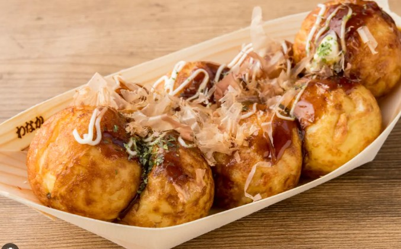
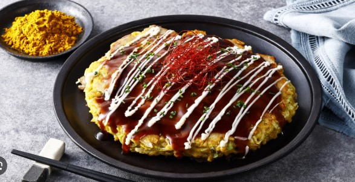
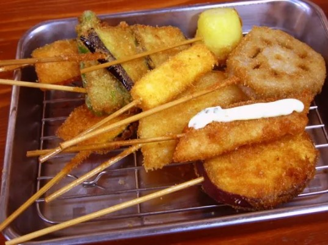
교토
- 유도후 (부드러운 순두부 요리)
- 가이세키 요리 (전통 코스 요리, 특별한 날 추천)
- 말차 (녹차) 관련 디저트 및 음료
- 츠케모노 (일본식 채소 절임)
- 니시키 시장의 다양한 현지 식재료 및 간식
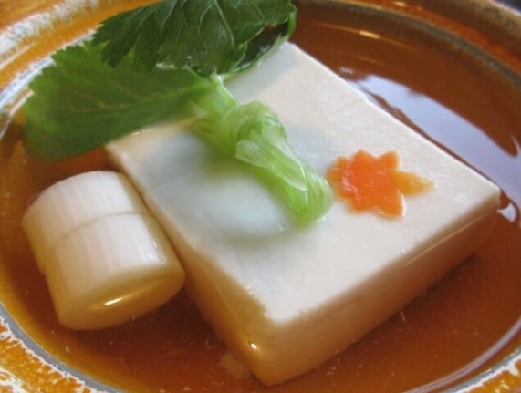
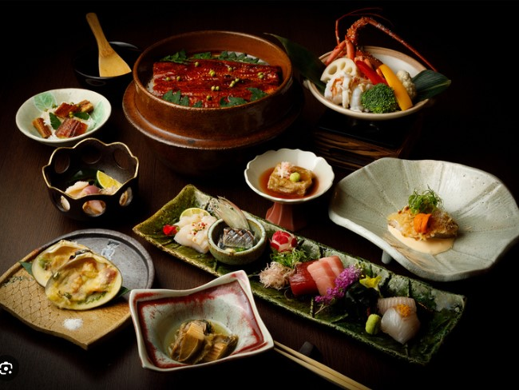
여행 유의사항 및 팁
- 날씨: 7월의 간사이 지역은 매우 덥고 습하므로, 가볍고 통기성 좋은 옷차림, 모자, 선크림, 휴대용 선풍기 등을 준비하세요. 수분 섭취도 중요합니다.
- 교토 오버투어리즘: 주요 관광지는 아침 일찍 방문하거나, 비교적 덜 알려진 명소를 방문하는 것도 좋은 방법입니다. 버스보다는 지하철이나 택시를 이용하면 혼잡을 피하는 데 도움이 될 수 있습니다.
- 교통: 간사이 지역 내 이동은 JR, 사철 등 다양한 철도가 편리합니다. ICOCA 같은 충전식 교통카드를 준비하면 편리합니다. (단거리 위주라 JR패스는 불필요해 보입니다.)
- 데이터/와이파이: 포켓 와이파이 또는 현지 유심카드를 미리 준비하여 지도 검색 및 정보 확인에 활용하세요.
- 환전 및 결제: 일본은 여전히 현금 사용 비중이 높은 편이나, 카드 결제 가능 매장도 많습니다. 적절히 환전해 가세요.
- 전압: 일본은 100V를 사용하므로, 멀티 어댑터 또는 돼지코 변환 어댑터를 준비하세요.
- 간단한 일본어 회화: 기본적인 인사말(안녕하세요-곤니치와, 감사합니다-아리가토 고자이마스)을 알아두면 좋습니다.
- 휴족 시간: 많이 걷게 되므로 저녁에는 휴족 시간 시트 등을 활용하여 다리 피로를 풀어주세요.
주요 명소 사진 (예시)
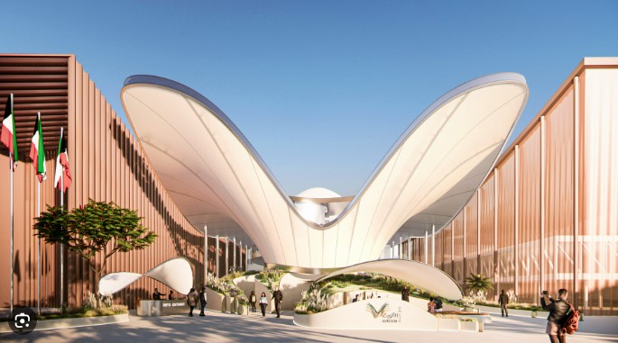
오사카 엑스포
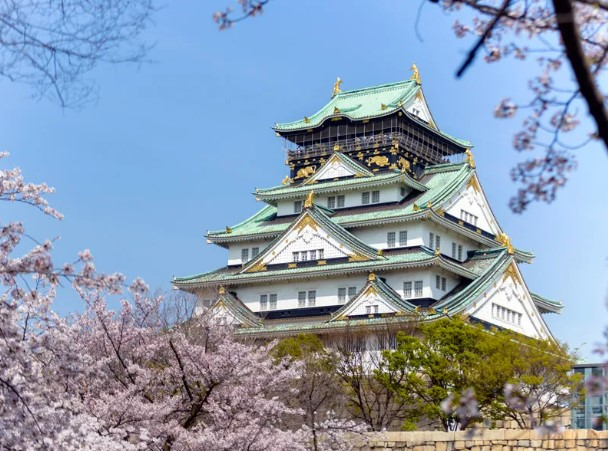
오사카 성
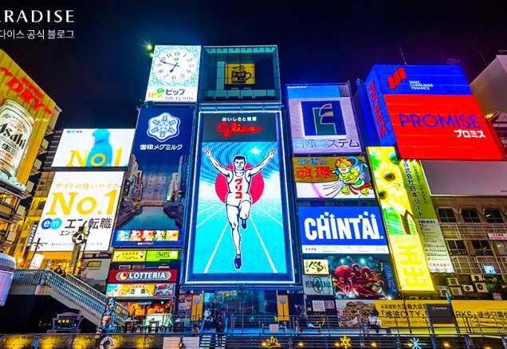
도톤보리
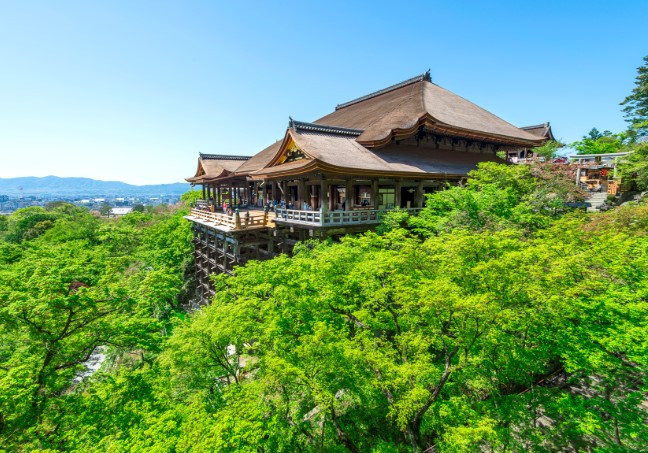
기요미즈데라
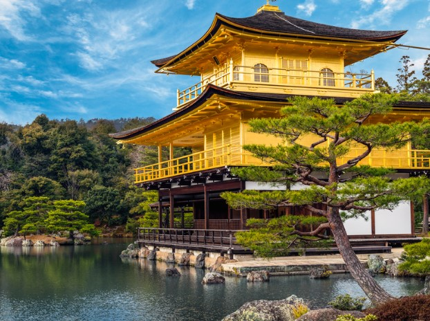
킨카쿠지
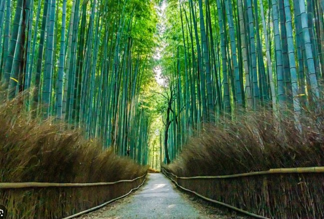
아라시야마